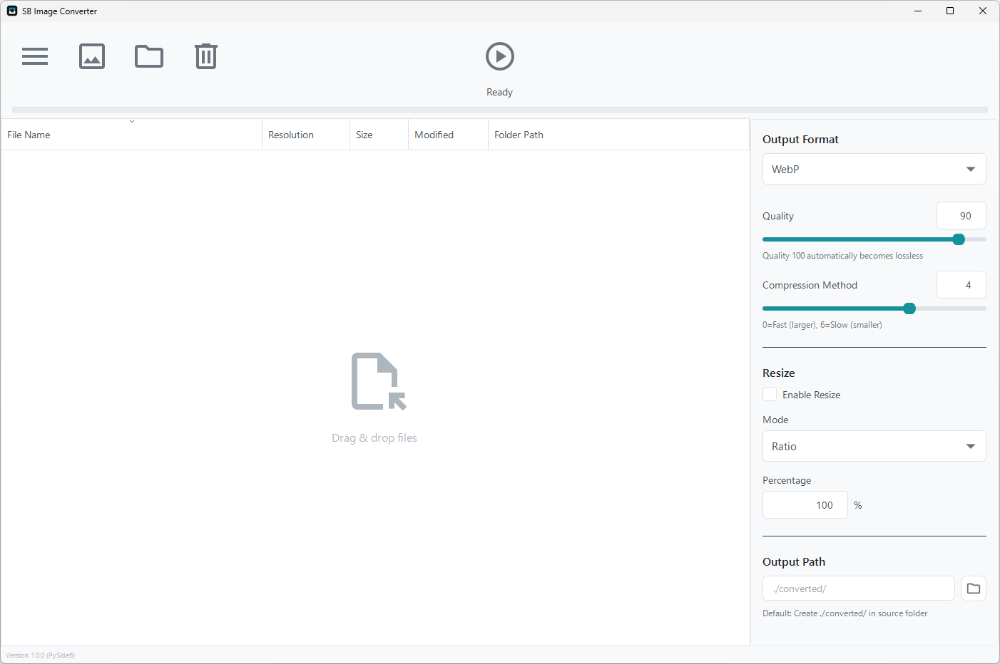
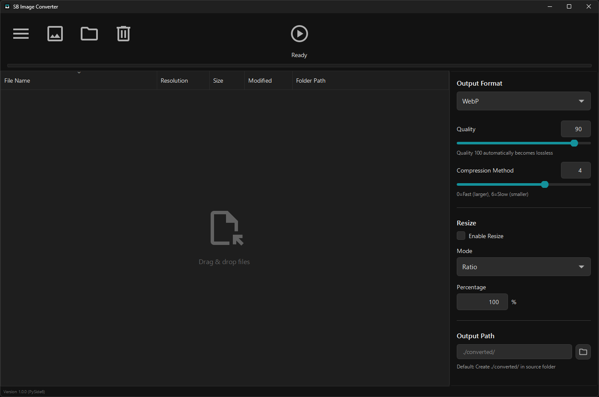
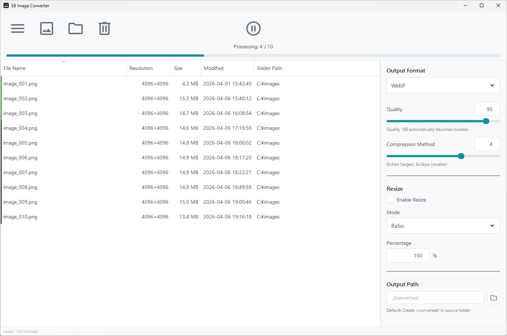

Free open-source software for Windows with format conversion between WebP, PNG, JPG, and BMP, flexible resizing, and detailed quality settings for each format.
| OS | Windows 10 or later (64-bit) |
| RAM | 4GB or more recommended |
| Disk Space | ~150MB |
No installation required · Extract and run

Support for WebP, PNG, JPG/JPEG, and BMP formats. Significantly reduce file size by converting to modern WebP.
Add hundreds of images at once with drag & drop. Process them quickly in batch to save time.
Choose from 4 flexible modes: percentage, fixed pixels, long edge, or short edge based on your needs.
Fine-tune settings for each format: WebP compression method, PNG compression level, JPG subsampling, and more.
Choose to keep or remove camera Exif information and GPS data to protect your privacy.
Eye-friendly dark mode included. UI is fully localized in English and Japanese for intuitive operation.
Clean and intuitive interface

Eye-friendly dark mode

Real-time conversion progress
Drag & drop images you want to convert
Choose output format from WebP, PNG, JPG, or BMP
Click button to batch convert
Latest version: 1.0.3 (Released 2026-05-13)
License: GNU General Public License v3.0
How to Use
※No installation required. The extracted folder can be placed anywhere.
※If you see "Windows protected your PC" warning on first run,
click "More info" → "Run anyway"